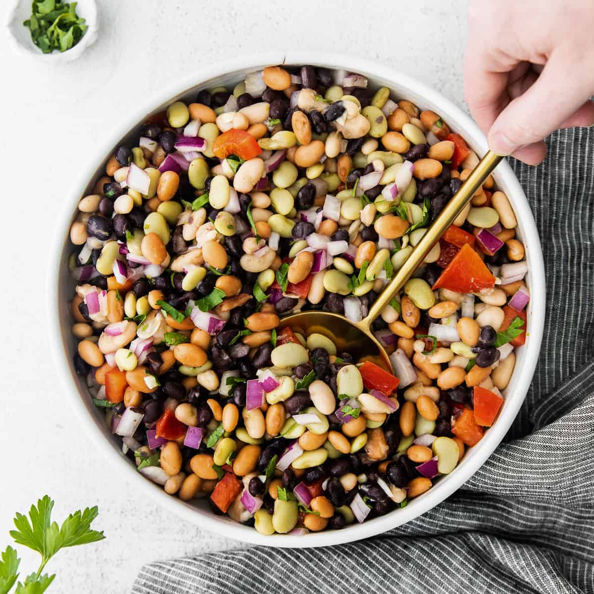

Best Bean Salad

Description
Prep Time:
20 mins
Additional Time:
8 hrs
Total Time:
8 hrs 20 mins
Servings:
18
Yield:
12 cups
Ingredients
- 1 (15.5 ounce) can garbanzo beans, drained
- 1 (14.5 ounce) can kidney beans, drained
- 1 (14.5 ounce) can black beans, drained
- 1 (14.5 ounce) can green beans, drained
- 1 (14.5 ounce) can wax beans, drained
- 1/2 cup chopped green pepper
- 1/2 cup chopped onion
- 1/2 cup chopped celery
- 3/4 cup white sugar
- 1/2 cup salad oil
- 1/2 cup vinegar
- 1/2 teaspoon salt
- 1/2 teaspoon ground black pepper
Steps
- Combine garbanzo beans, kidney beans, black beans, green beans, wax beans, green pepper, onion, and celery in a large bowl; toss to mix.
- Whisk together sugar, oil, vinegar, salt, and pepper in a separate bowl until sugar is dissolved; pour over bean mixture. Mix well.
- Refrigerate salad for 8 hours to overnight before serving.